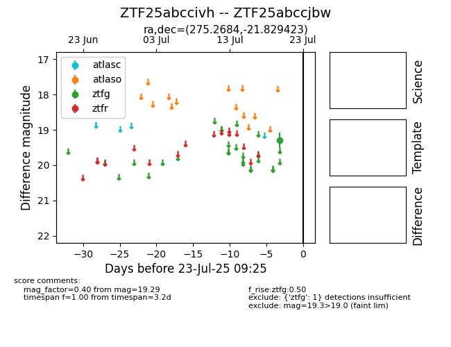

Target ZTF25abccivh at 2025-07-23 12:37, see:
FINK: fink-portal.org/ZTF25abccivh
Lasair: lasair-ztf.lsst.ac.uk/objects/ZTF25abccivh
ALeRCE: alerce.online/object/ZTF25abccivh
alt names
ZTF25abccjbw (ztf,fink)
ZTF25abccivh (
coordinates:
equatorial (ra, dec) = (275.2684,-21.82942)
galactic (l, b) = (10.1290,-3.46371)
photometry
last ztfg=19.29
1 ztfg detections
